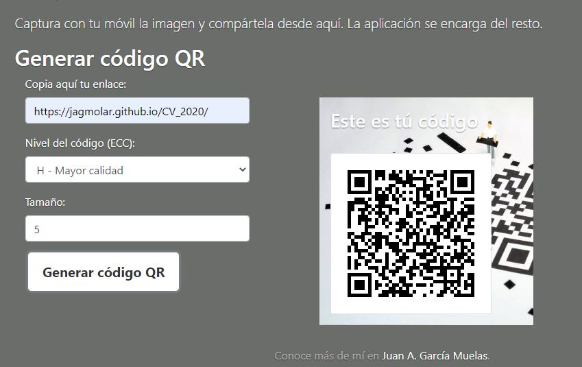

QR Test

Website for obtaining QR codes.
Beta version
Carried out as a base test within a larger collaborative project for the development of adapted QR codes for letters from prospective clients.
For this reason, it is a fairly clean project visually, where the management of the library that controls the creation of the codes, even if the development of the logo was already added to the icon, or a view for contacts.
Even so, it is fully functional as a tool and maintains a responsive design in the presentation..
You can try it by clicking on the logo:
 .
.